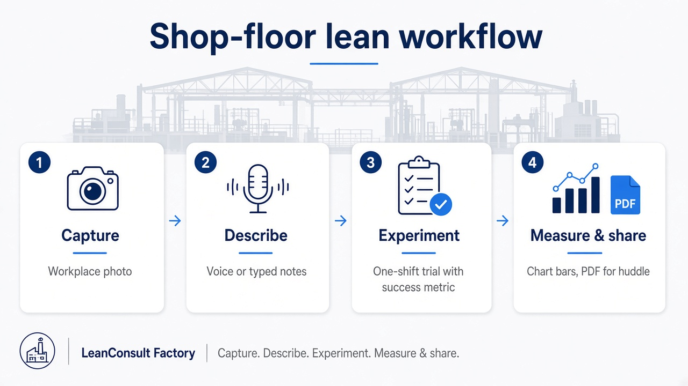

Lean Consult · iPhone & iPad · Separate from Windows Products
LeanConsult Factory — Kaizen waste & 5S tools for the shop floor.
Capture a workplace condition, describe it by voice or text, and get a cautious, measurable lean experiment — generated privately on this device. Made for production supervisors and continuous-improvement leads.

Workflow overview for shop-floor lean consulting — capture, describe, experiment, measure. Confirm in-app behavior on the App Store listing.
Official listing: LeanConsult Factory on the App Store. Confirm current offer, compatibility and privacy details there.
What lean consulting means here
LeanConsult Factory is built for shop-floor walks where you want a cautious continuous-improvement loop — not a consultant slide deck and not a fake “root cause solved by AI.” You observe a real workplace condition, state what you see in plain language, and get a reversible one-shift trial with a success metric and a clear keep-or-revert rule. That matches how many supervisors and CI leads actually run Kaizen, 5S and waste walks: small, measurable experiments you can undo if they do not help.
How to use LeanConsult Factory
Based on the public App Store description. Always confirm the latest screens and limits in the app and on the Store page.
Capture the condition
On a gemba or 5S walk, take a photo of the workplace situation you want to improve (clutter, motion waste, unclear standard work, and similar). Photos stay in the app until you export — they are not added to your Photos library automatically.
Describe it by voice or text
Record a short spoken note or type what you observed: what is happening, who is affected, and why it matters. Speech is transcribed on device; the listing states audio is not kept as a recording after transcription.
Review the experiment plan
The app produces one clear problem framing, a reversible one-shift trial, a success metric, and a keep/revert rule. Treat opportunity values as estimates until you measure and mark them verified.
Run the trial on the floor
Execute the one-shift experiment with your team. Use the action board to track follow-up items for the next shifts so the walk turns into execution, not only notes.
Measure before and after
Enter before/after numbers when you have them. The app can show measurement rows and a chart when you supply data — use that to decide keep, adjust, or revert.
Share when you choose
Export a PDF for shift huddles or leadership updates. Prior assessments stay in encrypted on-device history for your reference.
When to use it on the floor
Kaizen & waste walks
Turn a visible waste point into a small trial with a metric instead of an open-ended complaint.
5S and workplace organization
Document a zone, describe the gap, and trial a reversible standard for one shift.
Supervisor huddles
Pull PDF summaries into a daily huddle so the team sees problem, trial, and measurement in one place.
What you get
- One clear problem framing (not a fake root-cause claim)
- A reversible one-shift trial with success metric and keep/revert rule
- Before/after measurement rows and a chart when you enter numbers
- Action board for the next shifts
- Encrypted on-device history
- PDF export for huddles when you choose to share
Privacy by design
- No account and no Lean Consult cloud backend for analysis
- No advertising or analytics SDKs (per App Store privacy responses)
- Assessments encrypted in the app vault
- On-device speech recognition; audio is not kept as a recording after transcription
- Photos stay in the app until you export
Honest limits
- On current iOS builds, analysis is description-led: your notes drive the plan. Do not treat this as full photograph understanding.
- Opportunity values are estimates until you measure and mark them verified.
- Safety-sensitive cases (guards, electrical, chemicals, blocked emergency access) escalate to authorized personnel — no DIY bypass advice.
Who it’s for
- Production supervisors on shop-floor walks
- Continuous-improvement and Kaizen leads
- Teams that need private, on-device lean experiments
Licensing
Licensing and the current offer are on the App Store product page for your market. Refunds follow Apple App Store policy.
Separate from Windows Products
LeanConsult Factory is the Lean Consult line (Apple App Store). DocRev Manager is on Microsoft Store. Other Windows tools are sold B2B — see the homepage B2B section.
FAQ
Is this part of the Windows product set?
No. Lean Consult is separate on the App Store. DocRev Manager is on Microsoft Store. Other Windows tools are B2B.
Where do I install it?
From the Apple App Store.
What platforms are supported?
iPhone and iPad. See the App Store listing for current OS requirements.
How do I use it on a shop-floor walk?
Capture a photo of the condition, describe what you see (voice or text), review the one-shift trial plan, run the experiment, record before/after measurements, and export a PDF for huddles if needed. On current iOS builds the listing describes analysis as driven by your description — not full photograph understanding.
Does it replace a lean consultant?
No. It supports supervisors and CI leads with structured, reversible experiments. It does not replace authorized safety, maintenance or engineering decisions — safety-sensitive cases should escalate to qualified personnel per the App Store listing.